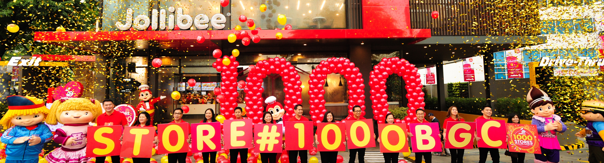

Jollibee was founded by Tony Tan and his family with its humble beginnings as an Ice Cream Parlor
which later grew into an emerging global brand. At the heart of its success is a family-oriented
approach to personnel management, making Jollibee one of the most admired employers in the region
with an Employer of the Year Award from the Personnel Management Association of the Philippines,
Best Employer in the Philippines Award from Hewitt Associated and a Top 20
Employer in Asia citation from the Asian Wall Street Journal.
Aside from promoting a family oriented work environment, the brand’s values also reflect on their advertising
and marketing. Jollibee knows their target audience very well: the traditional family and all communication materials focus
on the importance of family values,making Jollibee the number one family fast food chain in
the Philippines
and a growing international QSR player.
Customer satisfaction has always been key to Jollibee’s success. Never losing sight of its goals,
Jollibee has grown to be one of the most recognized and highly preferred brands in the Philippines.
Now the market leader among fast food chains in the Philippines, claiming a market share that totals
to more than half of the entire industry.
Jollibee’s growth is due to its delicious menu line-up – like its superior-tasting Chickenjoy,
mouth-watering Yumburger and Champ hamburger, and deliciously satisfying Jollibee Spaghetti -ably
complemented with creative marketing programs, and efficient manufacturing and logistics facilities.
It is made possible by well-trained teams that work in a culture of integrity and humility, fun and family-like.
Every Jollibee outlet welcomes customers with a clean and warm in-store environment and friendly and efficient service.
And it is this tried and tested formula of delivering great-tasting food, adherence to world class operating
standards and the universal appeal of the family values the brand represents that are driving the expansion of
Jollibee both locally and in the overseas market.
Jollibee is the largest fast food chain in the Philippines, operating a nationwide network of more than 750 stores.
A dominant market leader in the Philippines, Jollibee enjoys the lion’s share of the local market that is more than
all the other multinational brands combined. The company has also embarked on an aggressive international expansion
plan, and currently has 80 stores outside the Philippines-USA (26), Vietnam (32), Brunei (11), Jeddah (7), Qatar,
Hong Kong, and Kuwait (1 each), firmly establishing itself as a growing international QSR player.
Jollibee dedicated its continuous success to the Filipinos who have been there from the very start.
Jollibee is so well-loved everytime a new store opens, especially overseas, Filipinos always
form long lines to the store. It is more than home for them. It is a stronghold of heritage
and monument of Filipino pride.